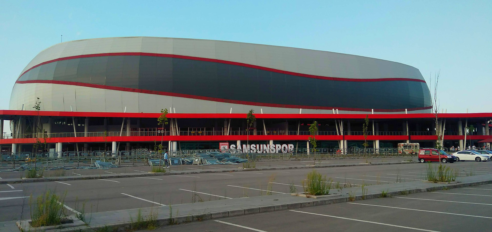
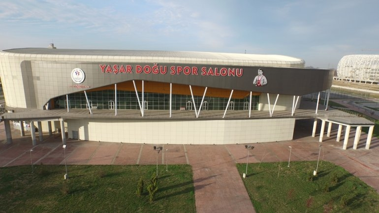
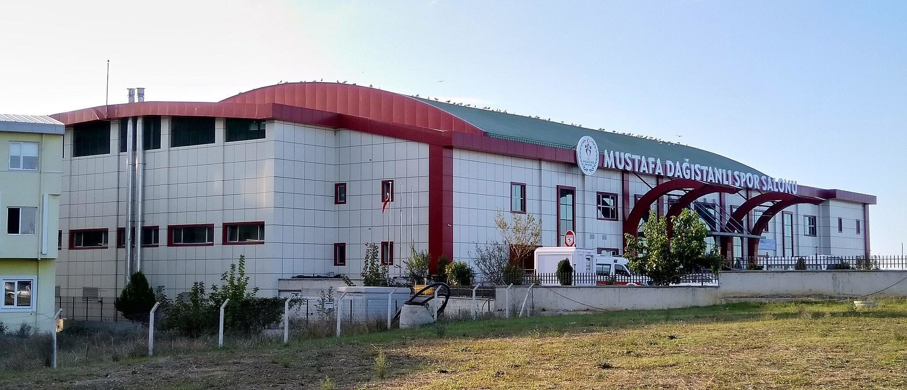

Samsunspor, Samsun merkezli olup, basketbol ve futbol alanında faaliyet gösteren milli spor kulübümüzdür.Samsunspor kulübü 1965 yılında kırmızı-beyaz rengiyle profesyonel liglere katılarak kurulmuştur.
Kulübün basketbol takımı Türkiye Basketbol Ligi'nde bulunurken, futbol takımı 1.Lig'de yer almaktadır.Takımlar saha maçlarını 19 Mayıs Stadyumu ve Mustafa Dağıstanlı Spor Salonunda gerçekleştirmektedir.Basketbol takımının geçmişte oynadığı Yaşar Doğu Spor Salonu değiştirilerek günümüzde Mustafa Dağıstanlı Spor Salonu olarak devam etmektedir.
Kulübün Haziran 2018 itibarıyla ₺55,5 milyon borcu bulunmaktayken, bu borçlar, Ağustos 2018'de kulüpten ayrı bir yapı hâlini alarak futbol branşını temsil eden şirkete aktarılmıştır ve günümüzde kulübün borcu bulunmamaktadır.
Forza Samsun, ultras kimliğiyle öne çıkmış, bu bağlamda el emeği pankartlar ve kendilerine özgü marşlar ile Samsunspor tribünlerinde yer almıştır.
Kulübün ilk başkanı aynı zamanda kurucularından olan Kadri Ersan, günümüzdeki başkanı ise Yüksel Yıldırım'dır.
  Samsunspor Kulübü ile ilgili daha fazla bilgiye https://www.samsunspor.org.tr/ adresinden ulaşabilirsiniz.
{kind=link}
{kind=link}
{kind=link}